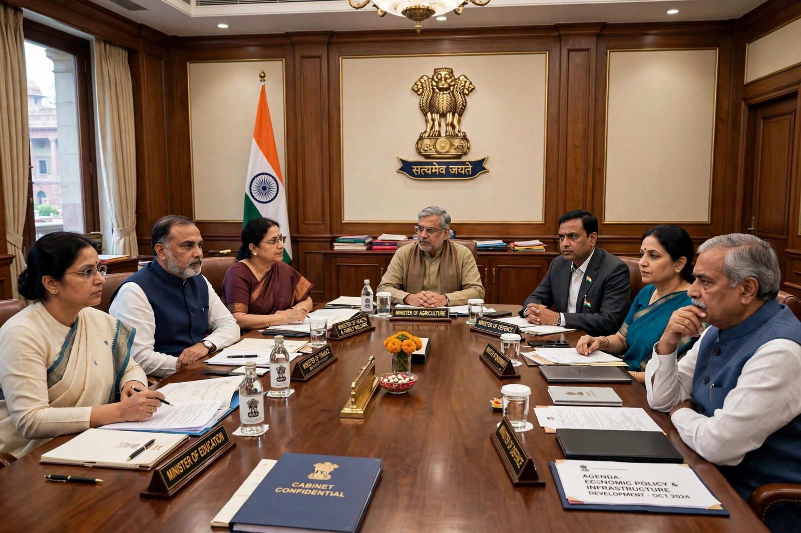

Union Council of Ministers

The Union Council of Ministers is the principal executive organ of the Government of India, headed by the Prime Minister. Under Article 74 of the Constitution, there shall be a Council of Ministers to aid and advise the President of India, who acts in accordance with that advice. The council is collectively responsible to the Lok Sabha, the lower house of Parliament.
| Head | Prime Minister of India |
|---|---|
| Appointed by | President of India, on the advice of the prime minister |
| Constitutional basis | Articles 74–75, Constitution of India |
| Responsible to | Lok Sabha (collective responsibility) |
| Maximum size | 15% of the strength of the Lok Sabha (91st Amendment) |
Composition and ranks
The council comprises three categories of ministers. Cabinet ministers hold the most important portfolios — such as Home Affairs, Finance, Defence and External Affairs — and form the inner group that meets as the Cabinet to take major decisions. Ministers of State rank below cabinet ministers; some hold independent charge of a ministry, while others assist a cabinet minister. Deputy ministers, the lowest rank, assist other ministers and have largely fallen out of use.
Ministers are appointed by the president on the advice of the prime minister and must be members of either house of Parliament, or become members within six months. The 91st Amendment of 2003 capped the total number of ministers, including the prime minister, at fifteen per cent of the total strength of the Lok Sabha.
Functions
The council directs the administration of the Union government: it formulates policy, supervises the ministries and departments, introduces government bills in Parliament, and prepares the annual budget presented by the finance minister. The Cabinet, chaired by the prime minister, is the supreme decision-making body; its decisions are implemented through the cabinet secretariat headed by the Cabinet Secretary, the senior-most civil servant.
Collective responsibility
Under Article 75(3) the council is collectively responsible to the Lok Sabha, meaning the entire ministry must resign if the house passes a motion of no confidence. Ministers also bear individual responsibility for the acts of their departments. A similar council of ministers, headed by a chief minister, exists in each state, advising the state governor under Articles 163–164.